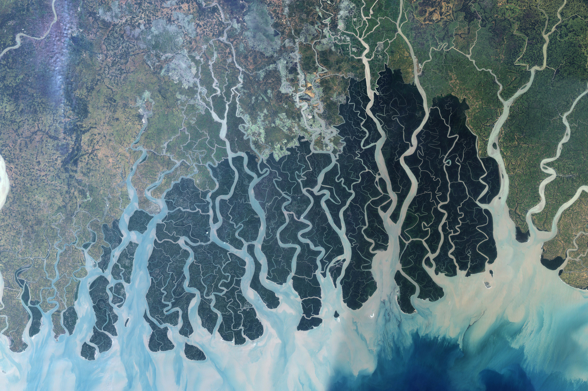

Natural Research Area in Bangladesh
Wildlife in the whole world is a matter of research. Bangladesh has a huge collection of wild animal, medicinal and other plants,biodiversity,forest,islands etc
Bangladesh has many reserve forest such as "Altadighi National Park","Bangabandhu Safari Park", "Lawachara Jatio Uddan", "Nijhum Dip","Sundarbans" and many others.The forest are full of wild animals, orchids,plants and other things which are not yet fully discovered.There are some example of the forests
Sundarbans
Stretching across part of southwestern Bangladesh and southeastern India, the Sundarbans is the largest remaining tract of mangrove forest in the world. The Sundarbans is a tapestry of waterways, mudflats, and forested islands at the edge of the Bay of Bengal. Home to the endangered Bengal tiger, sharks, crocodiles, and freshwater dolphins, as well as nearly two hundred bird species, this low-lying plain is part of the Mouths of the Ganges. The area has been protected for decades by the two countries as a National Park, despite the large human populations concentrated to the north.
Lawachara National Park

Lawachara was one of the filming sites of the 1956 movie Around the World in 80 Days. Way back home Lawachara National Park Srimongol Sylhet Bangladesh.jpg Trees in Lawachara. Bamboo groves in Lawachara. Biological diversity in the Lawachara National Park consists of 460 species, of which 167 species are plants, 4 amphibian species, 6 reptile species, 246 bird species, 20 mammal species, and 17 insect species.[5][6] One of this is the critically endangered western hoolock gibbons, of which only 62 individuals remain in the area.